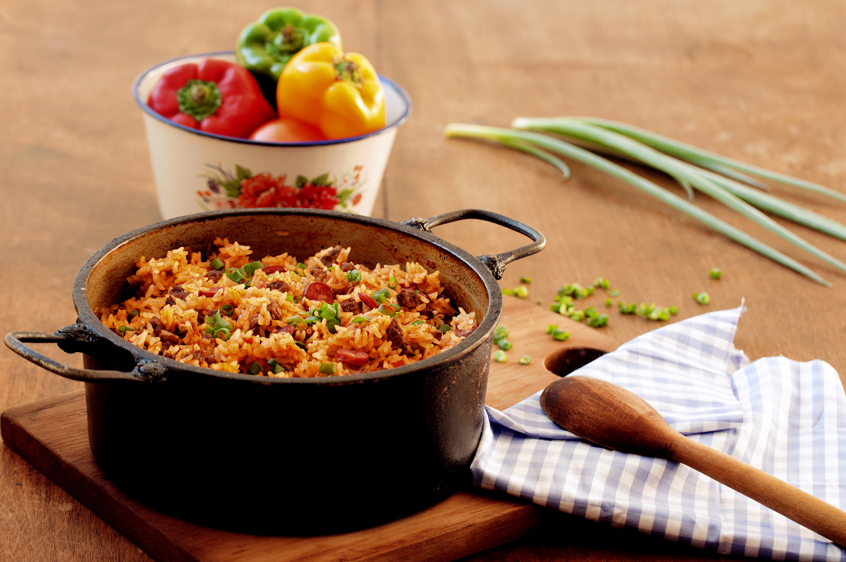

North East
Baião de Dois
Until recently, tapioca, acarajé, moqueca and other delicacies from the northeast were not found in all parts of Brazil. But in recent years, Northeastern cuisine has spread throughout the country and has definitely fallen into popular taste. A typical dish from Ceará, for example, is Baião de Dois, based on the traditional Brazilian ingredients rice, beans and jerky. The origin of Baião dates back to the dry times in the northeast, when everything you had was cooked to avoid waste, as food was scarce and nothing could spoil. Today, it is common for Baião de Dois to also take coalho cheese, bacon and seasonings such as onion, coriander and bay leaf.

How to make
- Wash the beans and put them in a pan (if you use the mulatto beans, choose the pressure cooker). Reserve.
- Wash the bacon, dry it with a paper towel, cut it into small cubes and place it in the pan with the beans.
- Add 2 liters of water, bring to a boil and cook for 35 minutes, or until the beans are soft. Remove from heat and set aside.
- Then heat the oil in another pan and sauté the onion and pepper, stirring occasionally, for 3 minutes, or until the onion is translucent.
- Add the rice and sauté, stirring occasionally, for 2 minutes, or until glossy and slightly translucent.
- Add the reserved beans, 3 cups (tea) of the broth from their cooking and the salt.
- If you prefer, add the bacon.
- Mix and once it boils, reduce the heat and cook for another 5 minutes, or until the rice is tender.
- Add the parsley, stir carefully and remove.
- Serve with boiled and chopped plantains or with manioc flour.
- Tips: baião-de-dois is a typical dish from the northeastern hinterland.
- Originally, the beans are cooked in an iron pot, and only then, the rice is added and left to cook.
- The whole process takes a long time.
- To make it easier, you can cook the beans separately in the pressure cooker.
- The bacon is used to flavor the beans and may or may not be added to the preparation.
- If you prefer, cook the beans with dried meat, desalted and chopped into small pieces.